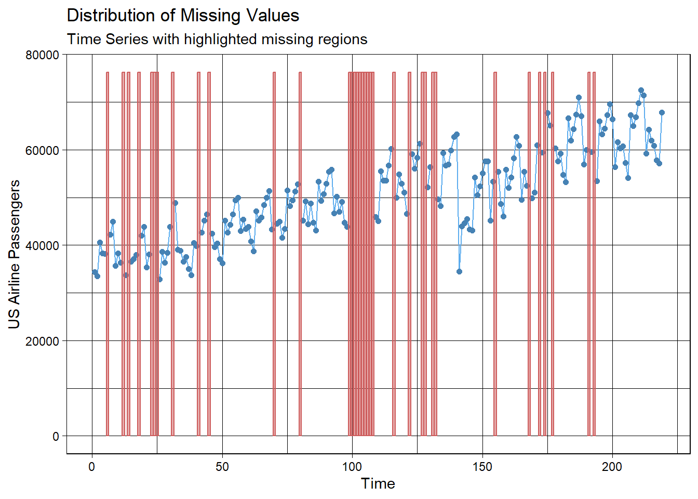

Chapter 7 Prophet
Prophet is a model framework introduced to the public by Facebook in 2018. Facebook uses this algorithm to forecast univariate time series by decomposing the it into pieces. This is similar to exponential smoothing, ETS, etc. In the Prophet model structure, the signal is broken down into three pieces - growth/trend, season, holiday.
The growth/trend component uses trend lines (time) as variables in the model. This trend is a piecewise trend that brakes the pattern into different pieces using knots to change the slope. The user of the algorithm can specify the knots, or the algorithm will try to automatically select them. This trend can also be a logarithmic trend that is similar in design to the dampened trend approach to exponential smoothing.
The seasonal component consists of Fourier variables to account for the seasonal pattern. The algorithm was originally designed for daily data with weekly and yearly seasonal effects. This can be expanded though to handle different types of data and seasons. The yearly season is set to 10 Fourier variables by default:
\[ X_Y = \cos(\frac{2\pi t}{365.25}) + \sin(2 \times \frac{2\pi t}{365.25}) + \cdots + \sin(10 \times \frac{2\pi t}{365.25}) \]
The weekly season is set to three Fourier variables by default:
\[ X_W = \cos(\frac{2\pi t}{7}) + \sin(2 \times \frac{2\pi t}{7}) + \cos(3 \times \frac{2\pi t}{7}) \]
The last component is the holiday component that consists of binary dummy variables to flag holidays in the dataset.
The prophet package contains all the functions needed for the Prophet algorithm, but it is in a different format than the previous R time series functions. To start, we define our own “holidays” in the dataset. This list is a list of dates that you want flagged with binary variables. For our dataset, this would be September, 2001 as well as its 6 lags and the one seasonal lag (anniversary). These must be in a data frame (using the data.frame function) as date objects. The as.Date function will do this. This data frame needs to have specific naming conventions. The variable name is called holiday while the date variable is called ds. Next, the training data needs a time variable also called ds.
Once the dataset is structured and ready, the prophet function can be employed. If we didn’t have our own “holidays” to add to the algorithm, we would just use prophet() to activate the prophet model framework. However, we use the holidays = holidays option to input our own additional holidays. The add_country_holidays function is used to add pre-programmed holidays by country. We use the US option to specify US holidays. Next, we use the add_seasonlity function to add our own monthly seasonality. The name = 'monthly' option along with the period = 30.5 defines the monthly season with a period of 30.5 days per season. We can also specify the number of Fourier variables with the fourier.order option. Now that we have the structure created, we fit the algorithm using the fit.prophetfunction on our model object Prof and dataset prophet.data.
holidays <- data.frame(
holiday = 'Sep11',
ds = as.Date(c('2001-09-01', '2001-10-01', '2001-11-01',
'2001-12-01', '2002-01-01', '2002-02-01',
'2002-09-01')),
lower_window = 0,
upper_window = 1
)
prophet.data <- data.frame(ds = seq(as.Date('1990-01-01'), as.Date('2007-03-01'), by = 'm'), y = training)
Prof <- prophet(holidays = holidays)
Prof <- add_country_holidays(Prof, "US")
Prof <- add_seasonality(Prof, name='monthly', period=30.5, fourier.order=6)
Prof <- fit.prophet(Prof, prophet.data)## Disabling weekly seasonality. Run prophet with weekly.seasonality=TRUE to override this.## Disabling daily seasonality. Run prophet with daily.seasonality=TRUE to override this.Now that the model is created, we can forecast our dataset with the make_future_dataframe function with the periods = 12 and freq = 'month' options to specify that we want 12 months of forecasts. This function structures the dataset (inputs) needed to forecast. The predict function actually does the forecasting. We can plot this forecast with the plot function and calculate our test dataset MAE and MAPE as well.
forecast.data <- make_future_dataframe(Prof, periods = 12, freq = 'month')
predict(Prof, forecast.data)$yhat## [1] 34255.33 32499.49 38070.92 36911.03 36941.93 40848.35 42400.36 43302.47
## [9] 35532.07 37813.34 36612.26 36743.93 33812.55 34078.78 38230.53 36380.02
## [17] 37436.07 40072.83 42666.26 42516.02 34671.97 37241.34 35344.57 36137.36
## [25] 32224.82 33367.37 42138.47 39325.92 40342.41 43730.45 46267.72 46236.45
## [33] 36874.69 40281.24 38752.87 39307.85 36639.74 35738.23 43964.06 40874.95
## [41] 42530.65 45084.88 48256.20 47595.26 37759.93 41914.46 39273.34 40916.00
## [49] 36836.63 35604.48 45690.91 43244.49 44597.21 47217.11 50090.95 49706.53
## [57] 40301.46 44252.70 41416.94 43218.59 38719.53 37504.52 46802.47 44891.65
## [65] 46043.31 48619.76 51308.81 51098.25 42609.68 45858.88 43317.58 44790.19
## [73] 40300.12 40061.41 50868.54 47967.92 49053.18 52353.15 54959.19 54839.86
## [81] 44805.82 48865.35 46652.55 47848.75 44563.22 42268.28 52178.44 49199.16
## [89] 50686.62 53344.90 56347.98 55791.09 45205.35 50046.08 47572.29 48983.40
## [97] 45138.35 43728.31 53856.15 51144.68 52698.24 55053.08 58127.76 57478.29
## [105] 47943.73 51960.24 48995.00 50861.91 46233.37 45122.39 54204.05 52701.34
## [113] 53380.67 56362.64 58576.85 58771.81 50186.66 53463.11 50825.24 52324.75
## [121] 47737.73 47258.75 57911.53 55443.81 56080.71 59813.58 61971.26 62284.82
## [129] 52181.58 56294.84 54012.84 55262.78 51908.05 49372.83 56512.45 55068.43
## [137] 55014.77 59208.32 60670.27 61648.65 42570.89 45408.38 44014.25 44339.88
## [145] 41574.49 40602.23 55780.65 53935.32 54616.91 57837.89 60040.60 60257.27
## [153] 41735.77 54733.38 53270.61 53629.22 50503.15 50927.46 57645.77 54799.20
## [161] 56816.56 58457.26 62012.01 60865.70 51151.23 55556.28 52706.83 54417.54
## [169] 49619.32 50009.43 61345.22 57536.60 59514.41 61906.37 65404.95 64377.61
## [177] 54063.17 58387.64 55894.43 57355.58 53789.64 52123.53 64036.53 60555.69
## [185] 62538.85 64695.58 68194.36 67135.91 56494.00 61385.05 57937.37 60316.55
## [193] 55497.60 53184.45 64979.74 62782.69 63816.00 66685.26 69239.69 69104.64
## [201] 59749.27 63580.75 60794.70 62476.59 58027.24 56414.72 67240.95 63846.55
## [209] 66411.74 67504.61 71607.19 69913.05 61268.06 64603.63 61905.92 63464.89
## [217] 58818.41 58856.80 70940.40
# Calculate prediction errors from forecast
Prophet.error <- test - tail(predict(Prof, forecast.data)$yhat, 12)# Calculate prediction error statistics (MAE and MAPE)
Prophet.MAE <- mean(abs(Prophet.error))
Prophet.MAPE <- mean(abs(Prophet.error)/abs(test))*100
Prophet.MAE## [1] 1438.429## [1] 2.2382477.1 Python Code for Prophet
7.1.1 Model Structure
## Importing plotly failed. Interactive plots will not work.import pandas as pd
import numpy as np
import matplotlib.pyplot as plt
import statsmodels.api as sm
from statsmodels.graphics import tsaplots
from statsmodels.graphics import tsaplots
from statsmodels.tsa.seasonal import seasonal_decompose
from statsmodels.tsa.seasonal import STL
from statsmodels.tsa.arima_model import ARMA
from statsmodels.tsa.arima_model import ARIMA
from statsmodels.tsa.statespace.sarimax import SARIMAX
from statsmodels.tsa.holtwinters import SimpleExpSmoothing, Holt, ExponentialSmoothing
import pmdarima as pm
usair = pd.read_csv("https://raw.githubusercontent.com/sjsimmo2/TimeSeries/master/usairlines.csv")
df=pd.date_range(start='1/1/1990', end='3/1/2008', freq='MS')
usair.index=pd.to_datetime(df)
training = usair.head(207)
test = usair.tail(12)
d = {'ds': training.index, 'y': training['Passengers']}
training_prophet = pd.DataFrame(data = d)## 23:03:19 - cmdstanpy - INFO - Chain [1] start processing
## 23:03:19 - cmdstanpy - INFO - Chain [1] done processing